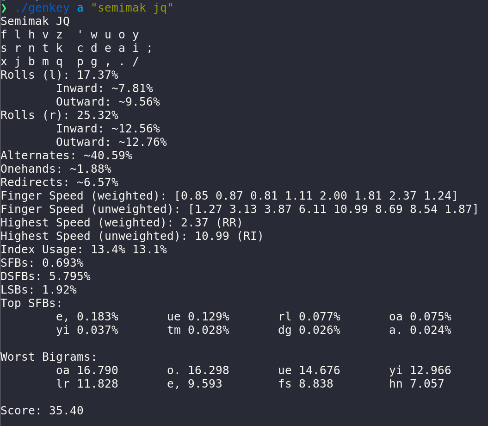
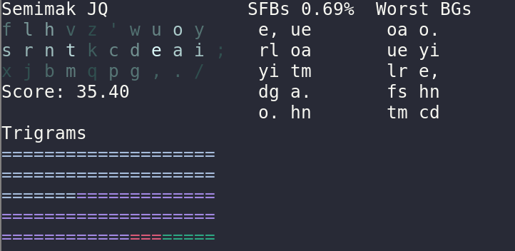
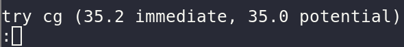
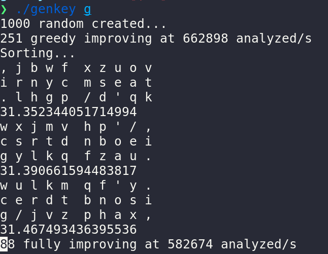

Table of Contents
Overview
Genkey is a powerful tool for analyzing and creating keyboard layouts. It features detailed analysis output, generation, customizable weighting, individual layout improvement, heatmap output, interactive analysis, and much more!
   
Installation
You can get the stable version of genkey through the releases page, or get the latest development versions by building it from source.
Releases - Stable
- Head over to the GitHub releases page and download the latest file for your respective operating system.
- Unzip the file.
- You're ready to go!
From Source - Latest
- Make sure that you have the Go programming language installed. For Windows or Mac, you can get it at the official downloads page. For Linux, you should get it from your distribution's package manager, as "go" or "golang".
- Make sure that you have git installed. Though you can just download a zip file, keeping your layouts and weights through updates is much more convenient through git. If you're using windows, get it from gitforwindows.org. If you're using MacOS, it's already installed. If you're using Linux, you most likely already have it; if not, get it from your distribution's package manager.
- Open a terminal. If you're on Windows, you can use the Git BASH program that you may have downloaded in step 2.
- Clone the repo with
git clone https://github.com/semilin/genkey - Enter the directory with
cd genkey - Compile the program with
go build. This shouldn't take too long. - You're ready to go!
Usage
Genkey has documentation available here!